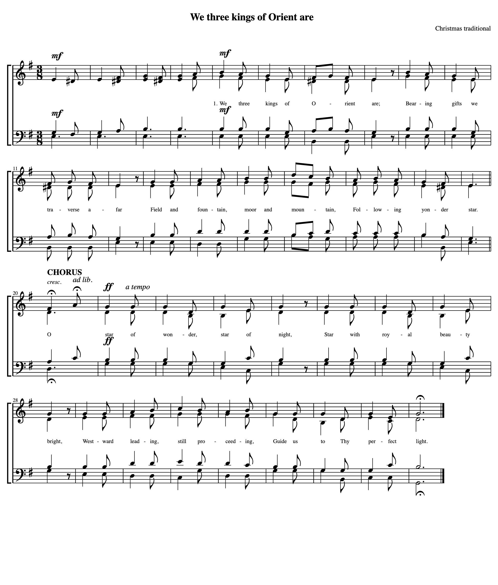

Note

Mockup — playback is simulated. Try: Space, ← →, R, M, P, X, F, E, /, ?, click or drag across the music, the scrub bar, ☰ → New / Open and Transpose, scroll while playing.
Drop a file or a photo anywhere, or pick a way in.
Recent